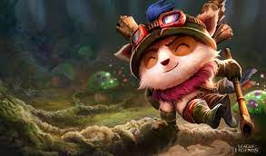

어떤 위협에도 꿈쩍 않는 티모는 끝 모를 적극성과 쾌활함으로 세상을 정찰한다. 티모는 확고한 도덕성을 가진 요들로, 밴틀 시티의 정찰대 강령을 따르는 것을 자랑스럽게 여긴다. 강령을 얼마나 열심히 따르는지 그의 행동이 가져올 더 넓은 결과를 깨닫지 못하기도 한다. 더러 정찰대의 존재에 의문을 품는 자들도 있지만, 한 가지는 분명하다. 티모의 신념은 절대 얕잡아봐서는 안 된다.

구 설정에서 티모는 트리스타나의 동료였는데, 요들 설정 개편 후에도 부대원 설정이 이어지는지는 불명이다. 설정 변경 후에도 유니버스에서 티모를 들어가 보면 트리스타나가 티모를 티모만한 친구도 없다고 언급하는 것으로 보아 같은 부대원은 아니더라도 친하고 믿음직한 동료 정도는 될 것으로 보인다. 연인 관계는 아니니 오해하지 말자.
베이가는 저널 오브 저스티스에서 밴들 시티의 모선을 훔치려 했던 걸 티모가 저지했던 적이 있다.
럼블은 자신이 타고 있는 로봇의 이름을 트리스티로 지을 만큼 트리스타나를 짝사랑하는데, 이를 봤을 때 럼블이 일방적으로 티모를 라이벌로 보고 있는 것인지도 모른다.